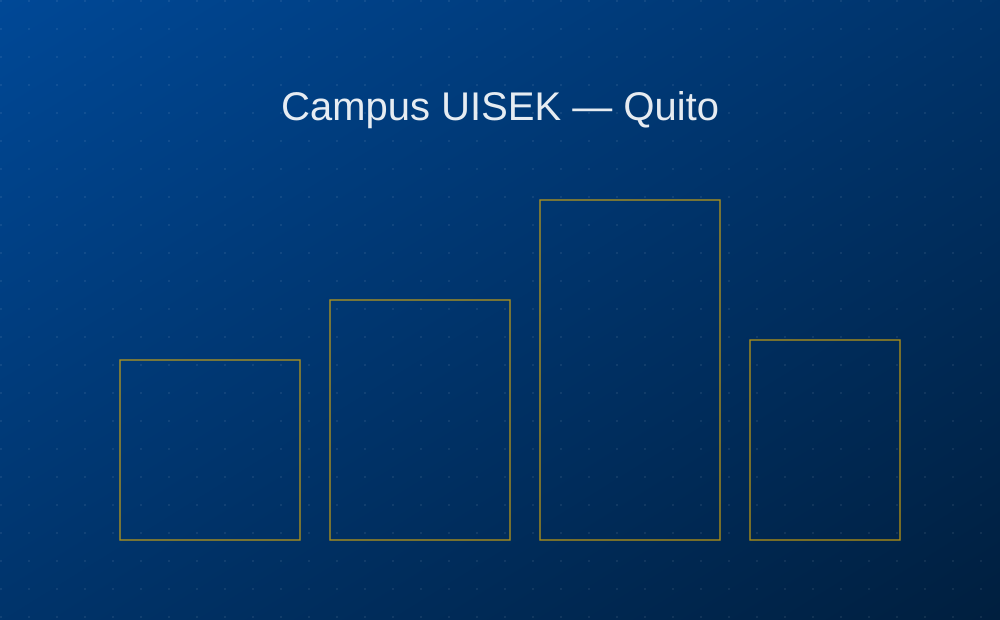

Documentar es también enseñar.
Proyectos UISEK nació de una pregunta simple: ¿qué pasa con el trabajo excepcional que se produce cada ciclo en las aulas? Este archivo existe para que no se quede en una carpeta, sino en un lugar donde se pueda leer, citar y compartir.
Un puente entre el aula y el mundo real
Cada semestre, cientos de estudiantes de la UISEK desarrollan soluciones a problemas reales: desde sistemas de riego inteligente hasta vivienda de emergencia. Este sitio reúne esos proyectos en un formato editorial claro, pensado tanto para la comunidad universitaria como para cualquier persona interesada en la innovación que se produce en Ecuador.
El contenido se organiza como un blog — con fecha, autoría y categoría — porque creemos que la ciencia y el diseño se entienden mejor cuando se cuentan como una historia en desarrollo, no como un archivo estático.

Tres principios editoriales
Se documenta como se investiga
Cada publicación incluye metodología, autoría y fuentes verificables — no es una simple galería de imágenes bonitas.
Abierto a toda la comunidad
Sin registro ni muros de pago. Cualquier persona puede consultar, descargar y citar el trabajo publicado aquí.
Problemas reales del Ecuador
Priorizamos proyectos que responden a necesidades concretas de nuestras comunidades, ciudades y territorios.